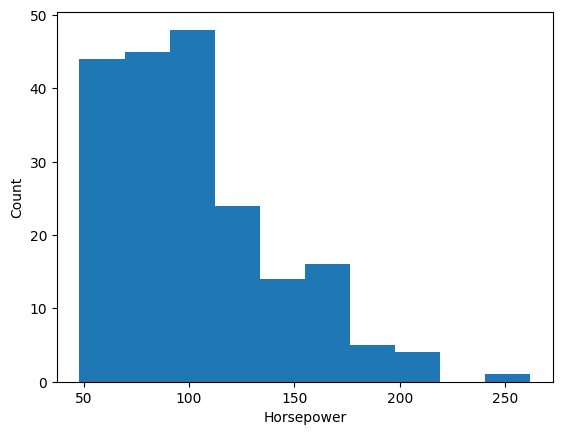

import numpy as np
import pandas as pd
import matplotlib.pyplot as plt
import polars as pl#####Import the data and do basic analysis
data_path = 'drive/MyDrive/datasets/oldcarprice.txt'#using pandas
cols = ['symboling', 'normalized-losses', 'make', 'fuel-type',
'aspiration', 'num-of-doors', 'body-style', 'drive-wheels', 'engine-location', 'wheel-base', 'length', 'width', 'height', 'curb-weight',
'engine-type', 'num-of-cylinders', 'engine-size', 'fuel-system',
'bore', 'stroke', 'compression-ratio', 'horsepower', 'peak-rpm',
'city-mpg', 'highway-mpg', 'price']
#read dataset
oldcarprice = pd.read_csv(data_path, names = cols)print(oldcarprice.shape)
oldcarprice.head()(205, 26)
| symboling | normalized-losses | make | fuel-type | aspiration | num-of-doors | body-style | drive-wheels | engine-location | wheel-base | ... | engine-size | fuel-system | bore | stroke | compression-ratio | horsepower | peak-rpm | city-mpg | highway-mpg | price | |
|---|---|---|---|---|---|---|---|---|---|---|---|---|---|---|---|---|---|---|---|---|---|
| 0 | 3 | ? | alfa-romero | gas | std | two | convertible | rwd | front | 88.6 | ... | 130 | mpfi | 3.47 | 2.68 | 9.0 | 111 | 5000 | 21 | 27 | 13495 |
| 1 | 3 | ? | alfa-romero | gas | std | two | convertible | rwd | front | 88.6 | ... | 130 | mpfi | 3.47 | 2.68 | 9.0 | 111 | 5000 | 21 | 27 | 16500 |
| 2 | 1 | ? | alfa-romero | gas | std | two | hatchback | rwd | front | 94.5 | ... | 152 | mpfi | 2.68 | 3.47 | 9.0 | 154 | 5000 | 19 | 26 | 16500 |
| 3 | 2 | 164 | audi | gas | std | four | sedan | fwd | front | 99.8 | ... | 109 | mpfi | 3.19 | 3.40 | 10.0 | 102 | 5500 | 24 | 30 | 13950 |
| 4 | 2 | 164 | audi | gas | std | four | sedan | 4wd | front | 99.4 | ... | 136 | mpfi | 3.19 | 3.40 | 8.0 | 115 | 5500 | 18 | 22 | 17450 |
5 rows × 26 columns
#the dataframe has a number of missing values that would rather be replaced with NaN
oldcarprice = oldcarprice.replace('?', np.NAN)
oldcarprice.head()| symboling | normalized-losses | make | fuel-type | aspiration | num-of-doors | body-style | drive-wheels | engine-location | wheel-base | ... | engine-size | fuel-system | bore | stroke | compression-ratio | horsepower | peak-rpm | city-mpg | highway-mpg | price | |
|---|---|---|---|---|---|---|---|---|---|---|---|---|---|---|---|---|---|---|---|---|---|
| 0 | 3 | NaN | alfa-romero | gas | std | two | convertible | rwd | front | 88.6 | ... | 130 | mpfi | 3.47 | 2.68 | 9.0 | 111 | 5000 | 21 | 27 | 13495 |
| 1 | 3 | NaN | alfa-romero | gas | std | two | convertible | rwd | front | 88.6 | ... | 130 | mpfi | 3.47 | 2.68 | 9.0 | 111 | 5000 | 21 | 27 | 16500 |
| 2 | 1 | NaN | alfa-romero | gas | std | two | hatchback | rwd | front | 94.5 | ... | 152 | mpfi | 2.68 | 3.47 | 9.0 | 154 | 5000 | 19 | 26 | 16500 |
| 3 | 2 | 164 | audi | gas | std | four | sedan | fwd | front | 99.8 | ... | 109 | mpfi | 3.19 | 3.40 | 10.0 | 102 | 5500 | 24 | 30 | 13950 |
| 4 | 2 | 164 | audi | gas | std | four | sedan | 4wd | front | 99.4 | ... | 136 | mpfi | 3.19 | 3.40 | 8.0 | 115 | 5500 | 18 | 22 | 17450 |
5 rows × 26 columns
#find out if there are still any null values
oldcarprice.isnull().any().any()Trueoldcarprice.isnull().sum()| 0 | |
|---|---|
| symboling | 0 |
| normalized-losses | 41 |
| make | 0 |
| fuel-type | 0 |
| aspiration | 0 |
| num-of-doors | 2 |
| body-style | 0 |
| drive-wheels | 0 |
| engine-location | 0 |
| wheel-base | 0 |
| length | 0 |
| width | 0 |
| height | 0 |
| curb-weight | 0 |
| engine-type | 0 |
| num-of-cylinders | 0 |
| engine-size | 0 |
| fuel-system | 0 |
| bore | 4 |
| stroke | 4 |
| compression-ratio | 0 |
| horsepower | 2 |
| peak-rpm | 2 |
| city-mpg | 0 |
| highway-mpg | 0 |
| price | 4 |
#####How to deal with missing values: Either replace the row with the mean of the column, replace by frequency, or drop the rows entirely
#Lets replace by mean
avg_normalized_losses = oldcarprice['normalized-losses'].astype('float').mean()
oldcarprice['normalized-losses'].replace(np.NAN, avg_normalized_losses, inplace = True)oldcarprice['normalized-losses']| normalized-losses | |
|---|---|
| 0 | 122.0 |
| 1 | 122.0 |
| 2 | 122.0 |
| 3 | 164 |
| 4 | 164 |
| ... | ... |
| 200 | 95 |
| 201 | 95 |
| 202 | 95 |
| 203 | 95 |
| 204 | 95 |
205 rows × 1 columns
#num of doors
oldcarprice['num-of-cylinders'].value_counts()
#since four is the most frequent lets replace nan with four
oldcarprice['num-of-doors'].replace(np.NAN, 'four', inplace = True)#bore
avg_bore = oldcarprice['bore'].astype('float').mean()
oldcarprice['bore'].replace(np.NAN, avg_bore, inplace = True)#stroke
avg_stroke = oldcarprice['stroke'].astype('float').mean()
oldcarprice['stroke'].replace(np.NAN, avg_stroke, inplace = True)#horsepower
avg_horsepower = oldcarprice['horsepower'].astype('float').mean()
print(f'The average horsepower is: ', avg_horsepower)
oldcarprice['horsepower'].replace(np.NAN, avg_horsepower, inplace = True)The average horsepower is: 104.25615763546799
#peak rpm
avg_rpm = oldcarprice['peak-rpm'].astype('float').mean()
print(f'The average rpm is: ', avg_rpm)
oldcarprice['peak-rpm'].replace(np.NAN, avg_rpm, inplace = True)The average rpm is: 5125.369458128079
#For the price we'll just drop the rows because it is a sensitive column
oldcarprice.dropna(subset='price', axis=0, inplace=True)
#reset index
oldcarprice.reset_index(drop=True, inplace=True)#Find out any remaining nulls
oldcarprice.isnull().sum()| 0 | |
|---|---|
| symboling | 0 |
| normalized-losses | 0 |
| make | 0 |
| fuel-type | 0 |
| aspiration | 0 |
| num-of-doors | 0 |
| body-style | 0 |
| drive-wheels | 0 |
| engine-location | 0 |
| wheel-base | 0 |
| length | 0 |
| width | 0 |
| height | 0 |
| curb-weight | 0 |
| engine-type | 0 |
| num-of-cylinders | 0 |
| engine-size | 0 |
| fuel-system | 0 |
| bore | 0 |
| stroke | 0 |
| compression-ratio | 0 |
| horsepower | 0 |
| peak-rpm | 0 |
| city-mpg | 0 |
| highway-mpg | 0 |
| price | 0 |
oldcarprice.shape(201, 26)####Changing the data columns into their correct dtypes
oldcarprice.dtypes| 0 | |
|---|---|
| symboling | int64 |
| normalized-losses | object |
| make | object |
| fuel-type | object |
| aspiration | object |
| num-of-doors | object |
| body-style | object |
| drive-wheels | object |
| engine-location | object |
| wheel-base | float64 |
| length | float64 |
| width | float64 |
| height | float64 |
| curb-weight | int64 |
| engine-type | object |
| num-of-cylinders | object |
| engine-size | int64 |
| fuel-system | object |
| bore | object |
| stroke | object |
| compression-ratio | float64 |
| horsepower | object |
| peak-rpm | object |
| city-mpg | int64 |
| highway-mpg | int64 |
| price | object |
oldcarprice[['peak-rpm', 'bore', 'stroke', 'price']] = oldcarprice[['peak-rpm', 'bore', 'stroke', 'price']].astype('float')
oldcarprice[['normalized-losses']] = oldcarprice[['normalized-losses']].astype('int')oldcarprice.dtypes| 0 | |
|---|---|
| symboling | int64 |
| normalized-losses | int64 |
| make | object |
| fuel-type | object |
| aspiration | object |
| num-of-doors | object |
| body-style | object |
| drive-wheels | object |
| engine-location | object |
| wheel-base | float64 |
| length | float64 |
| width | float64 |
| height | float64 |
| curb-weight | int64 |
| engine-type | object |
| num-of-cylinders | object |
| engine-size | int64 |
| fuel-system | object |
| bore | float64 |
| stroke | float64 |
| compression-ratio | float64 |
| horsepower | object |
| peak-rpm | float64 |
| city-mpg | int64 |
| highway-mpg | int64 |
| price | float64 |
####Standardization and normalization of data
#miles per gallon to litres per 100 km
oldcarprice['highway-mpg'] = 235/oldcarprice['highway-mpg']oldcarprice['city-mpg'] = 235/oldcarprice['city-mpg']
oldcarprice.rename(columns={'city-mpg' : 'city-L/100km'}, inplace= True)#rename the column to highway-L/100km
oldcarprice.rename(columns={'highway-mpg' : 'highway-L/100km'}, inplace= True)#normalize the length, width and height to range 0-1
oldcarprice['length'] = oldcarprice['length']/oldcarprice['length'].max()
oldcarprice['height'] = oldcarprice['height']/oldcarprice['height'].max()
oldcarprice['width'] = oldcarprice['width']/oldcarprice['width'].max()oldcarprice.head()| symboling | normalized-losses | make | fuel-type | aspiration | num-of-doors | body-style | drive-wheels | engine-location | wheel-base | ... | engine-size | fuel-system | bore | stroke | compression-ratio | horsepower | peak-rpm | city-L/100km | highway-L/100km | price | |
|---|---|---|---|---|---|---|---|---|---|---|---|---|---|---|---|---|---|---|---|---|---|
| 0 | 3 | 122 | alfa-romero | gas | std | two | convertible | rwd | front | 88.6 | ... | 130 | mpfi | 3.47 | 2.68 | 9.0 | 111 | 5000.0 | 11.190476 | 8.703704 | 13495.0 |
| 1 | 3 | 122 | alfa-romero | gas | std | two | convertible | rwd | front | 88.6 | ... | 130 | mpfi | 3.47 | 2.68 | 9.0 | 111 | 5000.0 | 11.190476 | 8.703704 | 16500.0 |
| 2 | 1 | 122 | alfa-romero | gas | std | two | hatchback | rwd | front | 94.5 | ... | 152 | mpfi | 2.68 | 3.47 | 9.0 | 154 | 5000.0 | 12.368421 | 9.038462 | 16500.0 |
| 3 | 2 | 164 | audi | gas | std | four | sedan | fwd | front | 99.8 | ... | 109 | mpfi | 3.19 | 3.40 | 10.0 | 102 | 5500.0 | 9.791667 | 7.833333 | 13950.0 |
| 4 | 2 | 164 | audi | gas | std | four | sedan | 4wd | front | 99.4 | ... | 136 | mpfi | 3.19 | 3.40 | 8.0 | 115 | 5500.0 | 13.055556 | 10.681818 | 17450.0 |
5 rows × 26 columns
####Divide the data into bins so that there is an analysis of how low, medium and high horsepower affects price
oldcarprice['horsepower'] = oldcarprice['horsepower'].astype('int', copy = True)
oldcarprice.head()| symboling | normalized-losses | make | fuel-type | aspiration | num-of-doors | body-style | drive-wheels | engine-location | wheel-base | ... | engine-size | fuel-system | bore | stroke | compression-ratio | horsepower | peak-rpm | city-L/100km | highway-L/100km | price | |
|---|---|---|---|---|---|---|---|---|---|---|---|---|---|---|---|---|---|---|---|---|---|
| 0 | 3 | 122 | alfa-romero | gas | std | two | convertible | rwd | front | 88.6 | ... | 130 | mpfi | 3.47 | 2.68 | 9.0 | 111 | 5000.0 | 11.190476 | 8.703704 | 13495.0 |
| 1 | 3 | 122 | alfa-romero | gas | std | two | convertible | rwd | front | 88.6 | ... | 130 | mpfi | 3.47 | 2.68 | 9.0 | 111 | 5000.0 | 11.190476 | 8.703704 | 16500.0 |
| 2 | 1 | 122 | alfa-romero | gas | std | two | hatchback | rwd | front | 94.5 | ... | 152 | mpfi | 2.68 | 3.47 | 9.0 | 154 | 5000.0 | 12.368421 | 9.038462 | 16500.0 |
| 3 | 2 | 164 | audi | gas | std | four | sedan | fwd | front | 99.8 | ... | 109 | mpfi | 3.19 | 3.40 | 10.0 | 102 | 5500.0 | 9.791667 | 7.833333 | 13950.0 |
| 4 | 2 | 164 | audi | gas | std | four | sedan | 4wd | front | 99.4 | ... | 136 | mpfi | 3.19 | 3.40 | 8.0 | 115 | 5500.0 | 13.055556 | 10.681818 | 17450.0 |
5 rows × 26 columns
#view how horsepower ranges
plt.hist(oldcarprice['horsepower'])
plt.xlabel('Horsepower')
plt.ylabel('Count')Text(0, 0.5, 'Count')
#create 3 bins using numpy
bins = np.linspace(min(oldcarprice['horsepower']), max(oldcarprice['horsepower']), 4)
groups = ['Low', 'Medium', 'High']#cut using pandas
oldcarprice['horsepower-bins'] = pd.cut(oldcarprice['horsepower'], bins, labels=groups, include_lowest=True)oldcarprice[['horsepower', 'horsepower-bins']]| horsepower | horsepower-bins | |
|---|---|---|
| 0 | 111 | Low |
| 1 | 111 | Low |
| 2 | 154 | Medium |
| 3 | 102 | Low |
| 4 | 115 | Low |
| ... | ... | ... |
| 196 | 114 | Low |
| 197 | 160 | Medium |
| 198 | 134 | Medium |
| 199 | 106 | Low |
| 200 | 114 | Low |
201 rows × 2 columns
####Indicator variable
dummy_var1 = pd.get_dummies(oldcarprice['fuel-type'])
dummy_var1.head()| diesel | gas | |
|---|---|---|
| 0 | False | True |
| 1 | False | True |
| 2 | False | True |
| 3 | False | True |
| 4 | False | True |
dummy_var1.rename(columns={'fuel-type-diesel':'gas', 'fuel-type-diesel':'diesel'}, inplace=True)
dummy_var1.head()| diesel | gas | |
|---|---|---|
| 0 | False | True |
| 1 | False | True |
| 2 | False | True |
| 3 | False | True |
| 4 | False | True |
# merge data frame "df" and "dummy_var1"
oldcarprice = pd.concat([oldcarprice, dummy_var1], axis=1)
oldcarprice.head()| symboling | normalized-losses | make | fuel-type | aspiration | num-of-doors | body-style | drive-wheels | engine-location | wheel-base | ... | horsepower | peak-rpm | city-L/100km | highway-L/100km | price | horsepower-bins | diesel | gas | diesel | gas | |
|---|---|---|---|---|---|---|---|---|---|---|---|---|---|---|---|---|---|---|---|---|---|
| 0 | 3 | 122 | alfa-romero | gas | std | two | convertible | rwd | front | 88.6 | ... | 111 | 5000.0 | 11.190476 | 8.703704 | 13495.0 | Low | False | True | False | True |
| 1 | 3 | 122 | alfa-romero | gas | std | two | convertible | rwd | front | 88.6 | ... | 111 | 5000.0 | 11.190476 | 8.703704 | 16500.0 | Low | False | True | False | True |
| 2 | 1 | 122 | alfa-romero | gas | std | two | hatchback | rwd | front | 94.5 | ... | 154 | 5000.0 | 12.368421 | 9.038462 | 16500.0 | Medium | False | True | False | True |
| 3 | 2 | 164 | audi | gas | std | four | sedan | fwd | front | 99.8 | ... | 102 | 5500.0 | 9.791667 | 7.833333 | 13950.0 | Low | False | True | False | True |
| 4 | 2 | 164 | audi | gas | std | four | sedan | 4wd | front | 99.4 | ... | 115 | 5500.0 | 13.055556 | 10.681818 | 17450.0 | Low | False | True | False | True |
5 rows × 31 columns
Warning: Total number of columns (31) exceeds max_columns (20) limiting to first (20) columns.
#drop original
oldcarprice.drop('fuel-type',axis = 1, inplace= True)# get indicator variables of aspiration and assign it to data frame "dummy_variable_2"
dummy_variable_2 = pd.get_dummies(oldcarprice['aspiration'])
# change column names for clarity
dummy_variable_2.rename(columns={'std':'aspiration-std', 'turbo': 'aspiration-turbo'}, inplace=True)
# show first 5 instances of data frame "dummy_variable_1"
dummy_variable_2.head()| aspiration-std | aspiration-turbo | |
|---|---|---|
| 0 | True | False |
| 1 | True | False |
| 2 | True | False |
| 3 | True | False |
| 4 | True | False |
#merge the new dataframe to the original datafram
oldcarprice = pd.concat([oldcarprice, dummy_variable_2], axis=1)
# drop original column "aspiration" from "df"
oldcarprice.drop('aspiration', axis = 1, inplace=True)oldcarprice.drop(oldcarprice.columns[-4:-3], axis = 1, inplace=True)
oldcarprice.head()| symboling | normalized-losses | make | num-of-doors | body-style | drive-wheels | engine-location | wheel-base | length | width | ... | horsepower | peak-rpm | city-L/100km | highway-L/100km | price | horsepower-bins | gas | gas | aspiration-std | aspiration-turbo | |
|---|---|---|---|---|---|---|---|---|---|---|---|---|---|---|---|---|---|---|---|---|---|
| 0 | 3 | 122 | alfa-romero | two | convertible | rwd | front | 88.6 | 0.811148 | 0.890278 | ... | 111 | 5000.0 | 11.190476 | 8.703704 | 13495.0 | Low | True | True | True | False |
| 1 | 3 | 122 | alfa-romero | two | convertible | rwd | front | 88.6 | 0.811148 | 0.890278 | ... | 111 | 5000.0 | 11.190476 | 8.703704 | 16500.0 | Low | True | True | True | False |
| 2 | 1 | 122 | alfa-romero | two | hatchback | rwd | front | 94.5 | 0.822681 | 0.909722 | ... | 154 | 5000.0 | 12.368421 | 9.038462 | 16500.0 | Medium | True | True | True | False |
| 3 | 2 | 164 | audi | four | sedan | fwd | front | 99.8 | 0.848630 | 0.919444 | ... | 102 | 5500.0 | 9.791667 | 7.833333 | 13950.0 | Low | True | True | True | False |
| 4 | 2 | 164 | audi | four | sedan | 4wd | front | 99.4 | 0.848630 | 0.922222 | ... | 115 | 5500.0 | 13.055556 | 10.681818 | 17450.0 | Low | True | True | True | False |
5 rows × 29 columns
oldcarprice.to_csv('drive/MyDrive/datasets/oldcarprice_v1.csv')